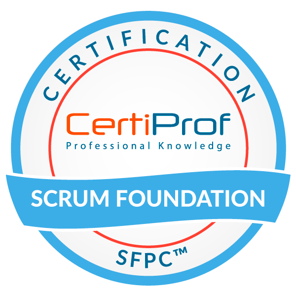

Rafael Santos
Sumary
+10 anos de experiência nos segmentos de logística, infraestrutura, desenvolvimento, telecom e e-commerce.
Buscando simplificar processos com soluções escaláveis e promovendo mudanças necessárias para entregar maior valor para o negócio no menor tempo, alinhado às estratégias.
Liderando time ágil para novos portfólios estratégicos e de transformação digital, identificando, entendendo e propondo soluções para os produtos digitais e core business.
Education
-
MBA USP/Esalq - Master of Business Administration - Digital Business - (Oct 2022 - May 2024)
Work Experience
Information Technology Coordinator
Compra Agora · Full-time
Dec 2022 - Present · 10 mos

Information Technology Coordinator
GPA · Full-time
Oct 2021 - Oct 2022 · 1 yr 1 mo
- Ponto focal das áreas de negócio e produtos para assuntos relacionados à tecnologia/transformação digital;
- Direcionamentos funcionais/técnicos diante de situações críticas, novos projetos, demandas e iniciativas de tecnologia;
- Definição de novas tecnologias junto às áreas de negócio e produtos, em linha com as melhores práticas de mercado e budget;
- Status semanal com Direx para tomadas de decisões e priorização de novas demandas.
- Acompanhamento da execução do orçamento de CAPEX e OPEX;
- Liderança do time, combinando os conhecimentos da equipe, com foco na atuação dos projetos, e avaliando a qualidade das entregas;
- Facilitador para remoção de impedimentos de toda natureza que possam comprometer as entregas da equipe;
- Definição das metas com a equipe, alinhado com as áreas de negócio e produtos;
- Gestão de contratos de serviços de tecnologia;
- Condução de processos de avaliação e seleção de ferramentas junto a fornecedores;
- Proposta de ações de melhoria contínua nos processos internos de planejamento, gestão de projetos e sustentação;
- Acompanhamento dos indicadores de sustentação;
- Promoção e incentivo do desenvolvimento e progressão das metodologias ágeis para o time;
Solution Architect
Jan 2021 - Oct 2021 · 10 mos
- Responsável por conceber soluções que possibilitem o alinhamento de estratégias do GPA e parceiros às iniciativas tecnológicas, a fim de maximizar soluções de vendas e serviços.
- Desenho de soluções baseada nas necessidades levantadas do nosso portfólio com objetivo de prover melhores práticas e recomendações adequadas às necessidades dos projetos.
- Realizar o diagnóstico e o mapeamento de necessidades internamente, garantindo a disponibilidade do ambiente de produção.
- Skills:
- Cloud AWS: ELB/ALB, S3, EC2, VPC, EC2, ECS, RDS, CloudFront, SQS/SNS, Lambda, CloudWatch, EKS, cloudformation e etc;
- Bancos de dados: MongoDB, Elasticsearch, PostgreSQL, Oracle, DynamoDB e MySQL;
- DevOps: Jenkins, Git, Docker, Kubernetes, Terraform e Azure Devops;
- Administração de Linux Server
- Sistema Operacional, Apache e Nginx;
Cloud Analyst
BRLink · Full-time
Jul 2020 - Dec 2020 · 6 mos
- Viabilizando iniciativas de produtos visando novas tecnologia em ambientes cloud e on- primeses de acordo com as necessidades/budget do cliente.
- Elaboração de plano de melhoria continua e redução de custos;
- Criação de ambiente para POC;
- Elaboração de documentação/procedimento para passagem de conhecimento.
- Implementação de pipelines de CI/CD - Jenkins, AWS Pipelines;
- Automação de infraestrutura - CloudFormation, Terraform, Bitbucket, GitHub;
- Analise de logs e troubleshooting;
- Implementações e desenvolvimento de atividades em ambiente AWS - EC2, Route 53, S3,
VPC, RDS, Security Hub, IAM, Cloud Watch, CloudFormation, CloudFront, Load Balancer,
Directory Service, SNS, SQS, CloudTrail, API Gateway, e etc;
- Criação e execução de Script Shell, JSON e YAML;
- Administração de servidores Cloud Computing(Windows 2008, 2012, 2016 e Linux).
- Administração Iptables.
- Suporte a IPSEC e OpenVPN – Administração.
- Configuração e administração em AD(Active Directory), IIS(Internet Information Services) e
DHCP(Dynamic Host Configuration Protocol);
- Administração de DNS;
- Monitoramento de serviços;

Sabbatical
Jun 2019 - Jan 2020 · 8 mos
County Dublin, Ireland
Especialista em TI
Walmart eCommerce Brasil (Walmart.com) · Full-time
May 2013 - Mar 2018 · 4 yrs 11 mos
- Especialista em tecnologia, viabilizando as iniciativas de produtos em produção e owner do produto Custumer Service;
- Responsável pela gestão de tickets, bug’s e mudanças e controle dos KPIs gerenciais;
- Planos de ação para melhoria continua do produto Customer Service, utilizando metodologias ágeis (Trello, Jira integrado com ServiceNow);
- Especializado em automátização de processos e rotinas em diversas aplicações;
- Carga massiva de dados entre diferentes bancos;
- Deploys em ambiente de pré-produção e produção;
- Responsável por sustentação do FrontEnd e Backend operando em 100%;
- Desenvolvimento de monitorias de sistemas e processos de negócio, criando dashboards, alerts (disparo de alertas) e rotinas de monitoração;
- Visão analítica para conduzir análise de impacto técnico e processo em relação às alterações propostas nos sistemas;
- Responsável por fornecer apoio a implementação de soluções de negócio;
- Ferramentas utilizadas:
- Desenvolvimento de aplicações - Python/Django, Ruby Rails, Java, C#, JavaScript, CSS, HTML e PHP;
- Manutenção/Administração de banco de dados - Oracle PL/SQL, SQL, MongoDB, SQLite, PostgreSql (Procedures / Trigger / Vews / Functions/ Tunning Queries);
- Desenvolvimento de testes CI/CD - Selenium.
- Sistemas de monitoria - New Relic, Grafana, ElasticSearch e Nagios;
Analista de sistemas - Tech Lider
B2W Digital · Full-time
Oct 2009 - May 2013 · 3 yrs 8 mos
- Responsável pela gestão da equipe de produção do SAC com 5 analistas, sendo 1 Sênior, 2 pleno, e 2 juinor;
- Forte relacionamento e interação com as áreas de negócio (Sac, Televendas, Risco, Delivery, Controladoria, B2C, B2B, Reclame aqui, Backoffice, Juridico e Marketplace);
- Ponto focal de assuntos de alta complexidade relacionados a tecnologia, sendo casos que estão no juridico, ombudsman, mídia sociais e reclame aqui;
- Acompanhamento e controle dos KPIs gerenciais, como o nível de serviço em relação aos incidentes, problemas e mudanças, garantindo o atendimento dentro do SLA;
- Criação de documentação técnica e base de conhecimento revisando periodicamente para atendimento de chamados e monitorias;
- Ferramentas utilizadas:
- PL/SQL Developer, SIGE, WMS, Oracle EBS, Oracle Transportation Management (OTM), Zabbix e Nagios
Awards and Certifications

Scrum Foundation Professional Certificate - SFPC
CertiProfCertiProf
Issued Mar 2022 · Expires Mar 2024
Credential ID 74805813
Lifelong Learning
CertiProfCertiProf
Issued Mar 2022

AWS Certified Cloud Practitioner
Amazon Web Services (AWS)
Issued Nov 2020 · Expires Nov 2023
Others